Виконуємо програмну та технічну адаптацію Volkswagen серії ID: українізацію та русифікацію, оновлення програмного забезпечення блоків, кодування та активацію прихованих функцій, налаштування мультимедіа та навігації, роботу з телематикою та онлайн-сервісами, налаштування дистанційного керування.

Volkswagen ID.3
Volkswagen ID.4 CROZZ / X
Volkswagen ID.4 USA
Volkswagen ID.6
Volkswagen ID.7
Volkswagen ID. UNYX

Переклад центрального екрана MIB3 та щитка приладів українською мовою
Виконуємо повноцінний переклад інтерфейсів мультимедійної системи MIB3 та цифрової приладової панелі для автомобілів FAW-VW, SAIC-VW та авто для ринку США. Коректно адаптуємо шрифти, повністю усуваємо китайські ієрогліфи та відключаємо неактуальні локальні сервіси. В результаті меню асистентів водія, клімат-контроль та бортовий комп'ютер отримують повноцінну українську або російську мову з коректним відображенням усіх системних повідомлень.
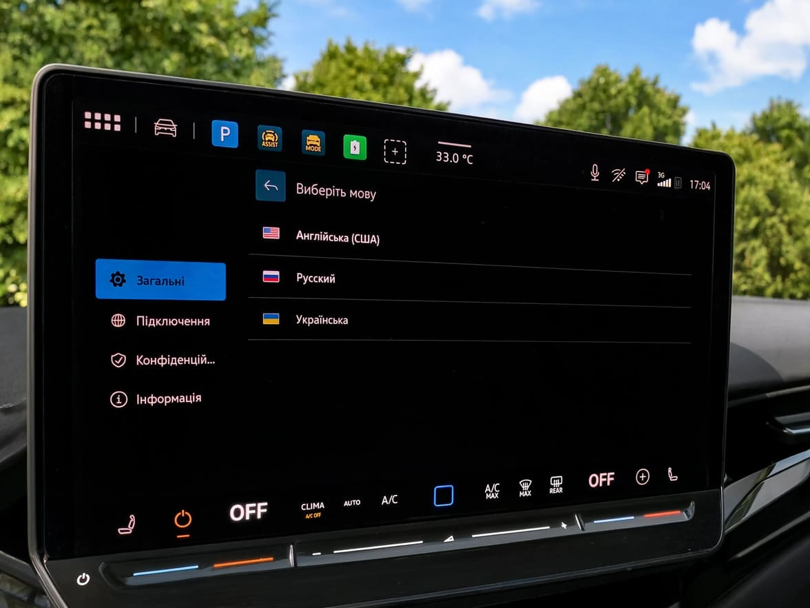
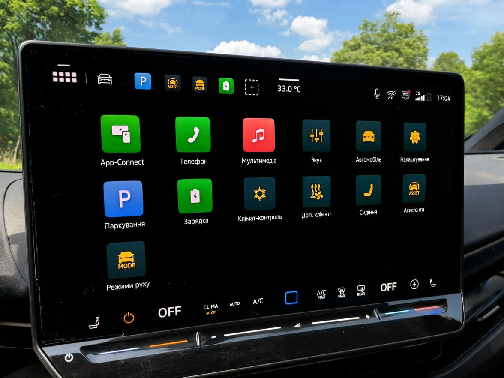
Підключення смартфона до штатної мультимедійної системи MIB3
Можливість активації Apple CarPlay та Android Auto безпосередньо залежить від ревізії головного пристрою MIB3 та поточної версії програмного забезпечення автомобіля. Під час діагностики ми перевіряємо апаратну та програмну конфігурацію, після чого реалізуємо бездротове підключення. Після налаштування смартфон автоматично підключається при посадці в салон, виводячи на головний екран Waze, Google Maps, Spotify, Apple Music та месенджери без застосування сторонніх USB-адаптерів або дротів.
Програмне розблокування автопілота дозволяє задіяти функції утримання в смузі руху, адаптивний круїз-контроль та ведення в заторах.
Оскільки частина асистентів залежить від фізичної наявності радарів, камер та ультразвукових датчиків, перед активацією виконується повна перевірка комплектації. За її результатами програмно відкриваються системи Travel Assist, Side Assist, Lane Assist та інші асистенти, передбачені апаратною платформою автомобіля.
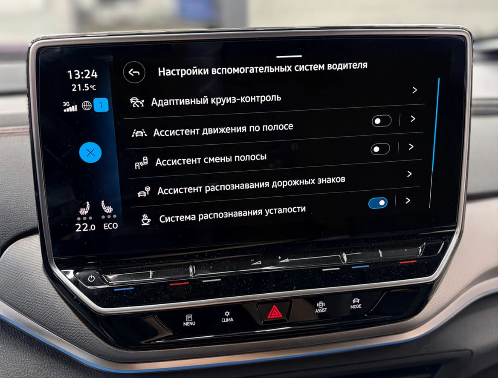
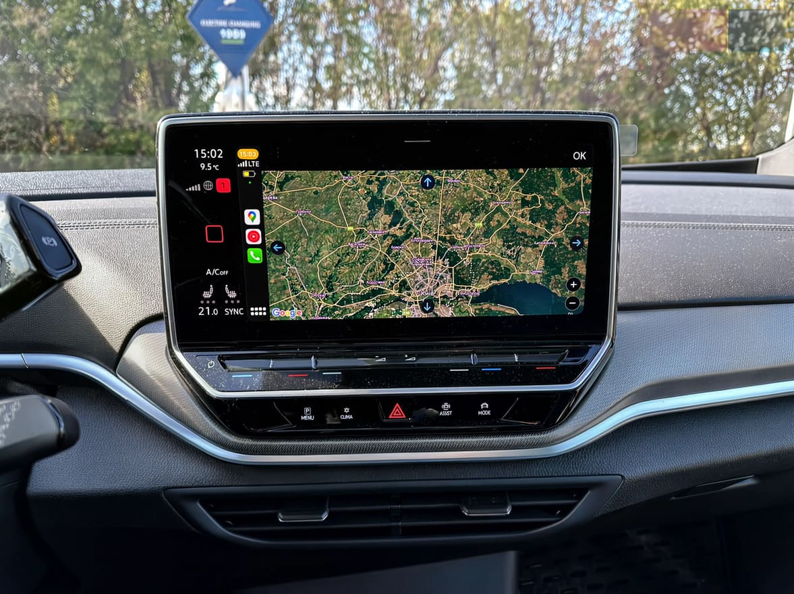
Повноцінна навігація та актуальна картографія для вашого авто.
У китайських модифікаціях Volkswagen ID штатна навігаційна система розрахована на азійський регіон. Можливість розгортання європейської картографії вимагає комплексного підходу, оскільки залежить від версії MIB3, ринку призначення та блоку телематики. Ми діагностуємо поточну конфігурацію мультимедіа та підбираємо оптимальний сценарій: від інтеграції карт України та Європи в штатний блок до налаштування зручної трансляції навігаційних сервісів через CarPlay та Android Auto.
Теплий салон взимку та прохолода влітку — миттєве керування кліматом без залежності від китайських серверів.
Для вирішення проблеми тих, що не працюють в нашому регіоні китайських серверів, встановлюється спеціалізований GSM/CAN-контролер. Модуль інтегрується в цифрову шину CAN-Comfort та працює через локальну SIM-картку українського оператора. Це забезпечує миттєвий запуск прогріву або охолодження салону зі смартфона через мобільний додаток або Telegram-бота з гарантованим відгуком без зависань та збоїв.
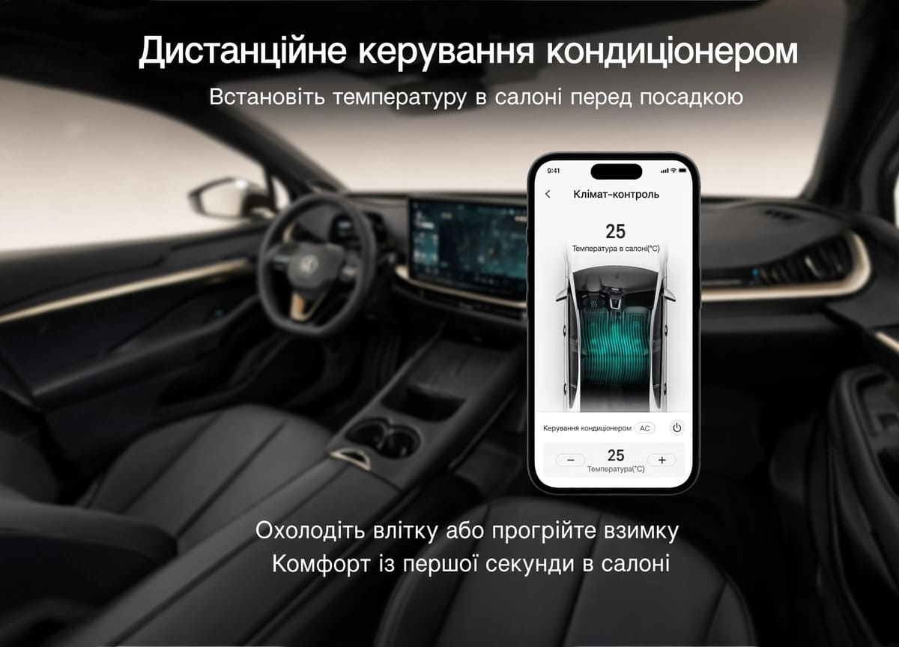
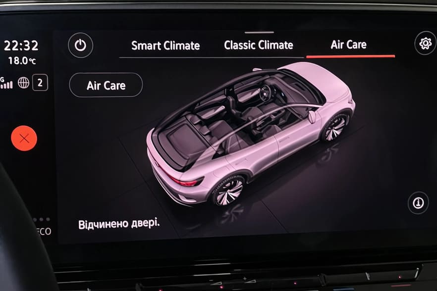
Персональне налаштування комфорту та прихованих заводських опцій.
Заводське програмне забезпечення електронних блоків Volkswagen ID містить масив неактивованих опцій. Після попереднього сканування конфігурації ми відкриваємо доступ до функцій комфорту, розширеній палітрі атмосферного підсвічування (Ambient Light), індивідуальним параметрам центрального замка, пам'яті кліматичної установки, автозакриттю вікон та панорами під час дощу, а також коригуємо логіку роботи світлотехніки та електронних помічників.
Точна цифрова діагностика та комплексний контроль всіх блоків вашого електромобіля.
Проводимо глибоке сканування електронних блоків керування, читання поточних помилок та аналіз версій ПЗ. Діагностика дозволяє оцінити реальний стан електромобіля, виявити сліди некваліфікованого втручання або некоректних прошивок та скласти точний план програмних та апаратних робіт.
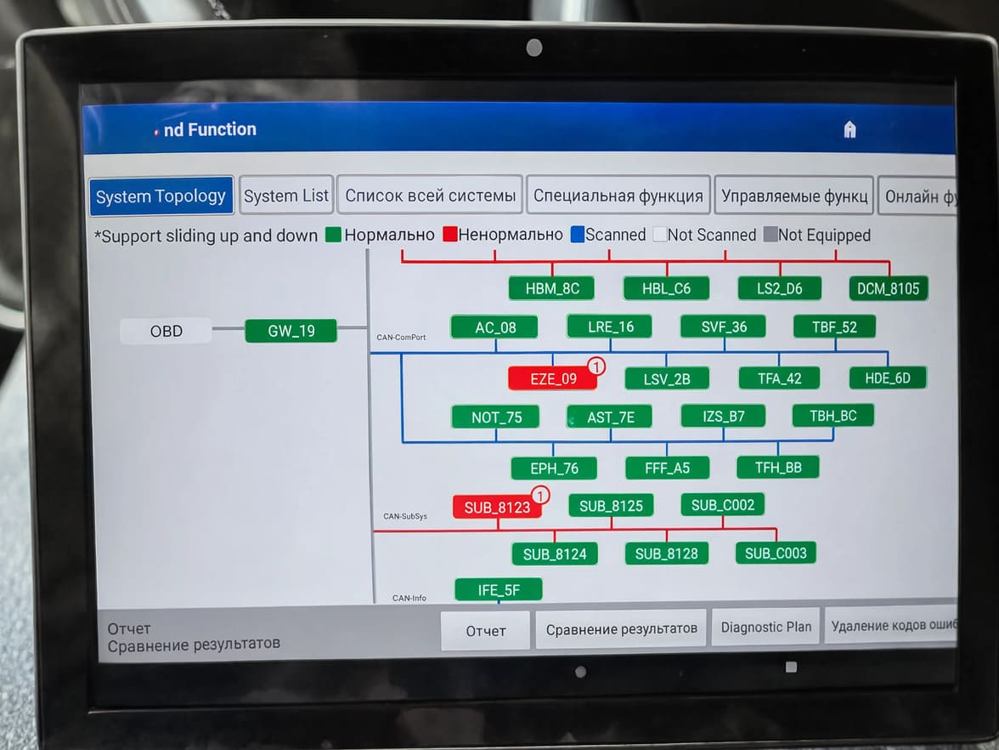
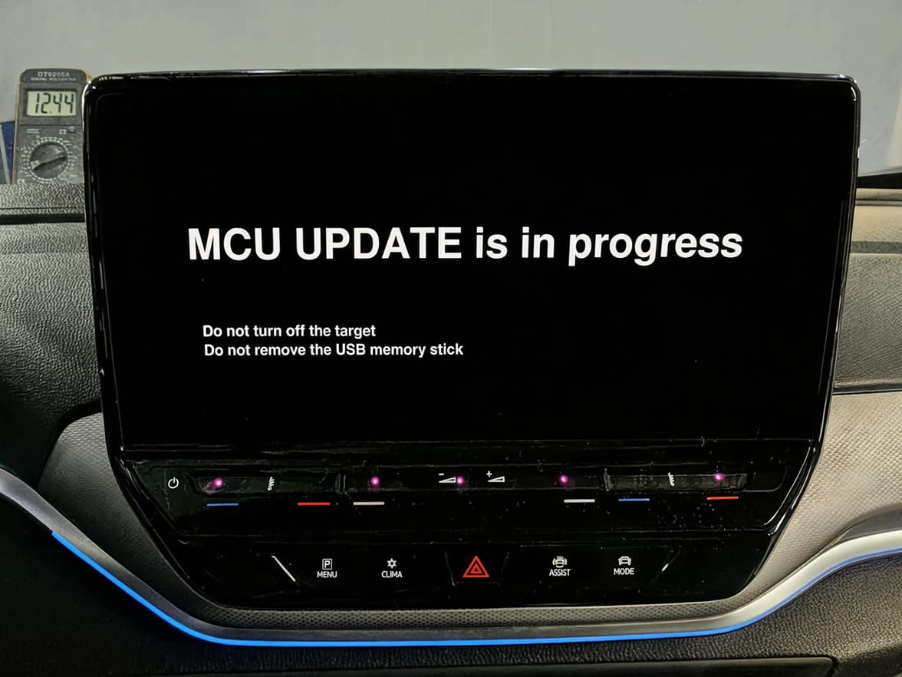
Сервісне оновлення через дилерський комплекс ODIS Engineering
Здійснюємо безпечне перепрограмування головного пристрою та системних блоків керування платформами MEB до стабільних заводських версій (включаючи 2959 та 2978). Процедура виконується із застосуванням професійного джерела живлення на 100А, що виключає просадку напруги. Оновлення усуває системні збої, підвищує плавність роботи MIB3 та готує автомобіль до локалізації.
Усунення «чорного екрана» та зависань MIB3
Збої під час оновлення або некоректний запис софту часто призводять до відмови головного пристрою, що виражається у зависанні на логотипі або повністю нефункціональному («чорному») екрані MIB3. Ми відновлюємо програмну структуру блоків ICAS1 та ICAS3 на компонентному рівні та в режимі Bench Mode, перезавантажуючи коректний bootloader та повертаючи мультимедіа в робочий стан без дорогої заміни блоку.
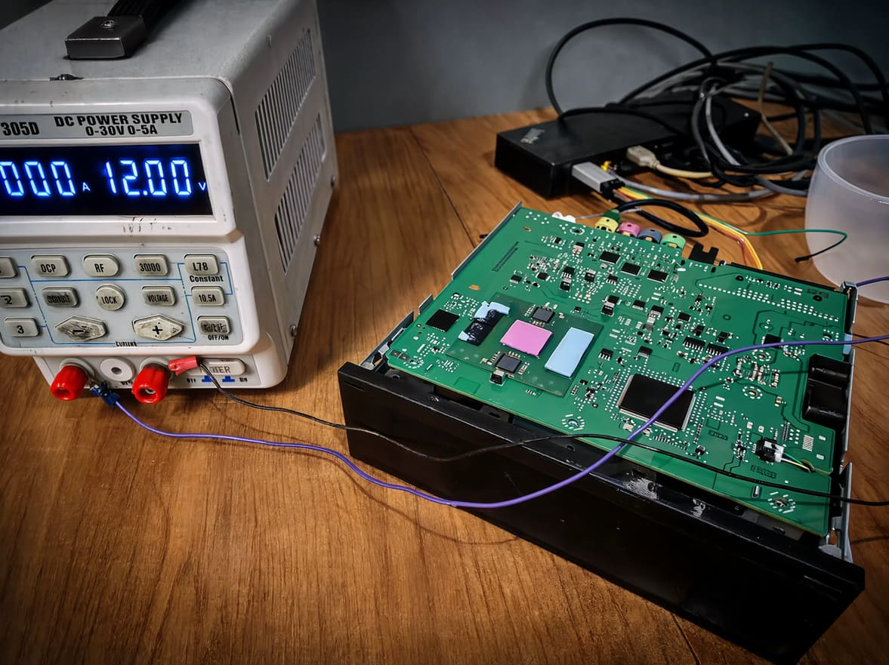
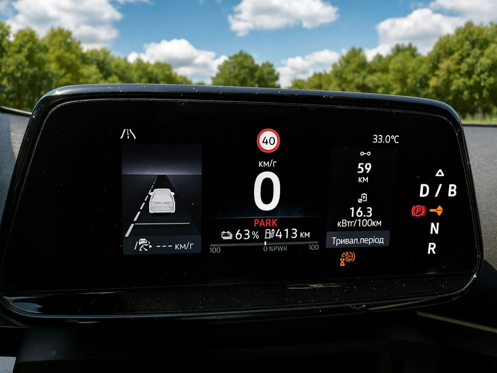
Комплексна адаптація VW ID зі США: від відновлення безпеки та європейського світла до швидкої зарядки CCS2.
Для автомобілів з аукціонів США (Copart, IAAI) виконуємо програмне очищення блоків Airbag (скидання Crash Data), перепайку задніх ліхтарів під європейський стандарт та прив'язку нових смарт-ключів. Також виконуємо демонтаж американського роз'єму CCS1 та монтаж оригінального порту CCS2 з повною інтеграцією в штатну систему охолодження та силовий ланцюг. Це забезпечує безпечну та швидку зарядку на будь-яких публічних станціях України та Європи потужністю до 175 кВт.
+ — доступно за окрему плату зі знижкою в рамках пакету
* — підсумкова вартість залежить від вихідної версії ПЗ та ринку призначення автомобіля (Китай / США)
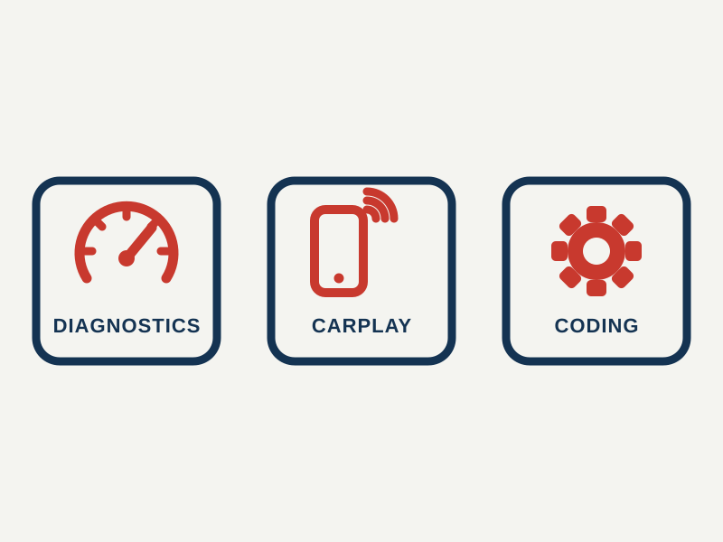
Пакет «CarPlay & Basic»
Базове програмне рішення для щоденного комфорту. Підходить для автомобілів зі стабільною версією ПЗ, де потрібно лише підключити смартфон та налаштувати основні зручності.
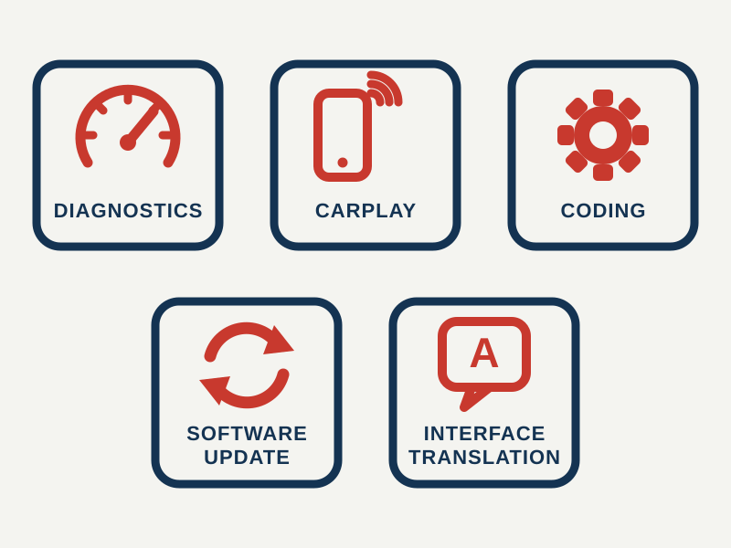
Пакет «Software & Navi»
Оптимальний вибір для свіжоімпортованих VW ID. Включає повне оновлення блоків до стабільної прошивки, переклад інтерфейсів MIB3 та щитка приладів, а також активацію бездротових сервісів.
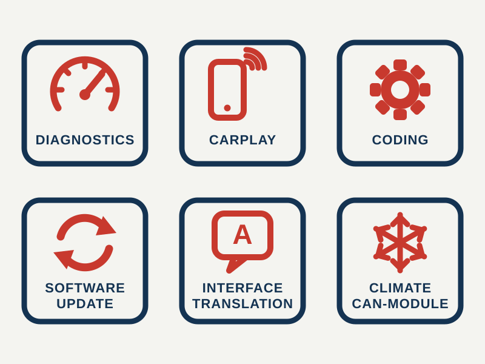
Пакет «Full Adaptation»
Комплексна програмно-апаратна адаптація електромобіля під ключ. Об'єднує повну локалізацію, прошивку блоків, активацію прихованих асистентів водіння та монтаж автономного CAN-модуля клімату для керування зі смартфона.
Спеціалізація на платформі MEB
Ми глибоко вивчили архітектуру Volkswagen ID, що виключає ризик пошкодження блоків та забезпечує стабільну роботу всіх систем.
Безпека та збереження OTA
Прошивка зачіпає тільки мультимедійний шар, не втручаючись в роботу систем безпеки та штатних оновлень автомобіля.
Нативна українізація інтерфейсу
Ніяких «кривих» шрифтів чи машинного перекладу. Інтерфейс виглядає так, ніби автомобіль приїхав з Європи.
Активація заводського 4G / eSIM
Приховане встановлення та налаштування SIM-картки без втручання в деталі інтер'єру та зі збереженням гарантії дилера.
Підтримка всіх версій ПЗ VW
Наші алгоритми адаптації стабільно працюють на різних версіях програмного забезпечення MIB3 та ID.Software.
12 місяців гарантії на ПЗ
Якщо після офіційного оновлення щось піде не так, ми безкоштовно відновимо працездатність та локалізацію.
Чому не можна просто перепаяти eSIM в штатному блоці телематики OCU для появи рідного інтернету та роботи VW App?
Фізична перепайка мікросхеми eSIM в китайському блоці телематики OCU (J949) не забезпечує повноцінний доступ до мережі. Авторизація автомобіля на серверах VAG КНР прив'язана не тільки до чіпа зв'язку, але й до цифрового підпису VIN-коду, криптографічних ключів блоку та роумінгового профілю оператора China Unicom. При зміні чіпа сервер блокує авторизацію OCU. Для стабільного інтернету в салоні використовується прихований 4G Wi-Fi роутер, а для гарантованого запуску прогріву та охолодження салону зі смартфона встановлюється автономний CAN-GSM модуль, що працює безпосередньо з цифровою шиною автомобіля без участі серверів Китаю.
Чи працює бездротовий Android Auto на китайських VW ID.4 Crozz / X та ID.6 без сторонніх USB-адаптерів?
Так, після програмної адаптації головного пристрою MIB3 бездротовий Android Auto працює штатно. У заводських прошивках для ринку Китая активований тільки дротовий Apple CarPlay та локальний сервіс Baidu CarLife, а Android Auto заблокований на рівні конфігурації. Ми вносимо зміни в параметри мультимедійної системи через діагностичний інтерфейс, відкриваючи протокол Android Auto. Смартфон підключається по Wi-Fi та Bluetooth автоматично при посадці в салон, виводячи Waze, Google Maps та Spotify на центральний екран без використання зовнішніх USB-«коробочок».
Чому на VW ID.4 розряджається 12V акумулятор за ніч та як прошивка вирішує цю проблему?
Глибокий розряд 12-вольтового допоміжного акумулятора на платформах MEB викликаний програмним багом ранніх версій ПЗ (0782, 0792, 1516). Через некоректні алгоритми в блоках ICAS1 та BMS мультимедіа та міжмережевий інтерфейс не можуть перейти в режим «сну» та продовжують циклічно опитувати шину CAN-Comfort після закриття авто. Постійний витік струму в 2–5 Ампер повністю висаджує АКБ за 12–18 годин. Силове оновлення прошивки всіх міжмережевих блоків до заводських версій 2959 або 2978 повністю виправляє логіку засинання електроніки.
Що робити, якщо на VW ID згас центральний екран MIB3 («чорний екран») або сенсор зависає на морозі?
Симптом «чорного екрана», відсутність реакції на натискання сенсора клімат-контролю та системна помилка «Data is not available» свідчать про переповнення буфера оперативної пам'яті та збій завантажувача головного пристрою MIB3. У 90% випадків проблема усувається програмно шляхом сервісної перепрошивки мультимедіа через інженерний комплекс ODIS Engineering. Якщо блок не реагує на стандартні команди перезапуску, ми відновлюємо коректну структуру дампу пам'яті в інженерному режимі Bench Mode («на столі») без фізичної заміни дорогого модуля.
Чи злітає українізація та активація CarPlay при скиданні MIB3 до заводських налаштувань або знятті клеми 12V АКБ?
Ні, не злітає. Переклад інтерфейсу, мовні пакети та ліцензійні ключі CarPlay / Android Auto записуються безпосередньо в енергонезалежну флеш-пам'ять головного пристрою на апаратному рівні. Скидання налаштувань через меню MIB3 лише очищає користувацькі дані (історію Bluetooth, збережені точки навігації), а знеструмлення 12-вольтового акумулятора не впливає на зашиті файли системи. Усі мови, кодування та активовані приховані функції зберігаються в повному обсязі.
Чи приходять офіційні оновлення по повітрю (OTA) та чи не заблокують вони перекладений інтерфейс?
На автомобілях із Китаю та США функція OTA-оновлень в нашому регіоні не працює через відсутність прямого зв'язку з серверами VAG через заводську eSIM. Щоб виключити ризик фонового збою або некоректного завантаження китайських пакетів, ми програмно коригуємо конфігурацію Gateway. Всі оновлення системних блоків платформи MEB безпечно виконуються вручну на сервісі через дилерський комплекс ODIS Engineering з обов'язковим підключенням зовнішнього джерела живлення 100А.
Чи виводяться підказки навігації Waze та Google Maps із CarPlay на приладовий щиток та проекцію (HUD)?
Передача навігаційних стрілок та дистанції до маневру на малий цифровий щиток приладів та проекційний дисплей (Head-Up Display) залежить від версії прошивки MIB3 та операційної системи смартфона. При оновленні софту блоків до актуальних версій (2959/2978) та активації штатного протоколу CarPlay підказки карт Apple Maps та Waze коректно транслюються на приладову панель, забезпечуючи зручну візуалізацію прямо перед очима водія.
Чи можна прописати другий смарт-ключ на китайський VW ID.4 / ID.6, якщо офіційні дилери відмовляють?
Так, ми виконуємо процедуру прив'язки оригінальних смарт-ключів (включаючи функції KESSY та віддалений запуск) для всіх моделей FAW-VW та SAIC-VW. Офіційні дилери VAG в Україні не обслуговують китайські версії через закриті доступи до серверів КНР. Ми використовуємо спеціалізоване інженерне обладнання для розрахунку сервісних PIN/CS-кодів іммобілайзера 5-го покоління (MEB/Immo5), прописуючи нові ключі в систему навіть при їх повній втраті (All Keys Lost).
Як працює дистанційний прогрів та охолодження салону через CAN-GSM модуль без китайських серверів?
CAN-GSM модуль — це автономний електронний контролер зі своєю українською SIM-карткою (Kyivstar, Vodafone, Lifecell), який монтується в салон та підключається до проводів цифрової шини CAN-Comfort. Коли ви надсилаєте команду на запуск клімату через мобільний додаток або Telegram-бота, модуль генерує заводський цифровий код активації та передає його прямо в блок кліматичної установки. Команда виконується миттєво, оскільки сигнал не проходить через сервери Volkswagen у Китаї, заблоковані роумінгові SIM-картки або віртуальні майстер-акаунти.
Чи можна заряджатися на потужних фастчарджерах (135–175 кВт) після заміни американського порту CCS1 на європейський CCS2?
Так, переобладнання американського порту CCS Combo 1 на європейський CCS Combo 2 виконується зі збереженням усіх заводських характеристик високої швидкості зарядки. Послуга включає демонтаж американського інлета, заміну силових кабелів великого перерізу, встановлення оригінального європейського роз'єму CCS2 та підключення до штатного контуру рідинного охолодження порт-роз'єму. Після програмного кодування контролера зарядки електромобіль приймають будь-які публічні станції фастчарджингу (Yasno, AutoEnterprise, GO TO-U) на максимальній потужності постійного струму (DC) до 175 кВт.
Чи можна активувати автопілот Travel Assist на базових комплектаціях VW ID (Pure / Pure+)?
Активація функції напівавтономного водіння Travel Assist (автоматичне утримання в центрі смуги, адаптування швидкості в заторах та екстрене гальмування) можлива на більшості базових комплектацій Pure та Pure+. Для роботи системи потрібна наявність штатної багатофункціональної вітровий камери (J843). Ми проводимо комп'ютерне сканування блоків, перекодовуємо параметри асистентів в блоках ABS, рульової рейки та радара, а за необхідності налаштовуємо коректний відгук асистента без заміни рульового колеса на ємнісне.
Наскільки безпечна процедура перепрошивки блоків через ODIS та що відбувається у разі збою?
Перепрограмування блоків виконується суворо за дилерськими протоколами VAG з використанням оригінального інженерного софту ODIS Engineering. Для запобігання падінню напруги, яке є головною причиною «оцеглювання» блоків під час запису флеш-пам'яті, автомобіль підключається до професійного стабілізатора живлення на 100А. У малоймовірному випадку збою передачі даних або обриву зв'язку ми відновлюємо працездатність блоків ICAS1, ICAS3 або MIB3 в режимі Bench Mode на компонентному рівні, вичитуючи та перезаписуючи заводський завантажувач (bootloader).
Чи впливає оновлення ПЗ та встановлення CAN-модуля на гарантію акумулятора та роботу теплового насоса взимку?
Програмна адаптація та монтаж CAN-модуля клімат-контролю не зачіпають заводські прошивки контролера високовольтної батареї (BMS) та контуру теплового насоса. Навпаки, оновлення софту до свіжих заводських версій оптимізує алгоритми термомеджменту та попереднього прогріву акумулятора в холодну пору року. CAN-контролер підключається в шину CAN-Comfort в режимі читання та передачі команд комфорту, не викликаючи помилок в діагностиці високовольтного тракту.
Скільки часу займає комплексна адаптація VW ID та чи потрібно залишати автомобіль на кілька днів?
Повний комплекс програмних та апаратних робіт (комп'ютерна діагностика, оновлення блоків через ODIS, українізація MIB3, активація CarPlay, кодування прихованих функцій та монтаж CAN-модуля клімату) виконується протягом одного робочого дня — від 4 до 6 годин. Автомобіль перебуває в закритому боксі під постійним стабілізованим живленням. Залишати машину на кілька днів не потрібно — ви забираєте повністю налаштований та протестований електромобіль в день звернення.
Чи потрібен перехідник для домашньої зарядки змінним струмом (AC 220V/380V) після українізації китайського VW ID?
Програмна українізація та налаштування мультимедіа не змінюють конструкцію фізичних портів. Китайські модифікації VW ID поставляються з портом GB/T AC для повільної зарядки. Для поповнення батареї вдома від звичайного настінного зарядного пристрою (Wallbox) або побутової мережі достатньо використовувати зарядний кабель з конектором GB/T або стандартний адаптер Type 2 — GB/T AC. Фізична заміна роз'єму потрібна тільки для порту швидкої зарядки постійним струмом (DC) на публічних станціях.
Чому після адаптації відключаються китайські додатки Baidu, HiCar та голосовий асистент?
Сервіси Baidu CarLife, китайські магазини додатків та азійський голосовий асистент розроблені виключно під цифрову інфраструктуру КНР та вимагають підключення до китайських IP-адрес. В процесі українізації ці нефункціональні для Європи сервіси заміщуються міжнародними стандартами Apple CarPlay та Android Auto. Це дає пряме підключення до Waze, Google Maps, Spotify та Telegram, позбавляючи від спливаючих помилок та випадкових викликів китайського асистента.
СТО AUTO MOTORS/ELECTRO MOTORS м. Київ, Залізничне шосе, 31
 +380677006543
+380667006543
+380737006543
+380677006543
+380667006543
+380737006543
 nospam@vw-id-service.com.ua
nospam@vw-id-service.com.ua
 Працюємо з 10.00 до 18.00
Працюємо з 10.00 до 18.00